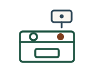
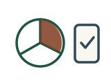
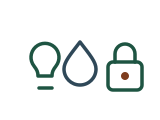

Kitchen and fire safety
The worry
Cooking is the most common way a safe home becomes an unsafe one. A pot left on a back burner, a tea towel too close to the element, a smoke alarm that nobody can hear from the bedroom.
What technology can do
Stove monitors can cut power to a hob that has been left on with nobody in the room. Heat and smoke sensors can be linked so that an alert reaches a family member as well as sounding in the house. Alarms can be chosen for how well they are heard by somebody with reduced hearing.
What Ageless does
We look at how cooking actually happens in that kitchen before recommending anything, because a shutoff that trips during a normal Sunday dinner will be unplugged within a fortnight. We install it, test it against real cooking, and adjust it if it turns out to be a nuisance.

Medication management
The worry
Medication is the quietest of these risks and often the most consequential. A dose missed, a dose doubled, or a prescription that changed and did not make it into the routine.
What technology can do
Automatic dispensers release only the dose that is due, and lock the rest away. Most will alert a family member if a dose has not been taken after a set time, which turns a silent problem into a visible one.
What Ageless does
We set the dispenser up around the actual prescription and the actual routine, not a default schedule. We handle the alerts so that they go to a person who can act on them, and we sort it out when the prescription changes, which it will.
Falls and getting help
The worry
A fall itself is often survivable. The damage usually comes from the time spent on the floor afterwards, unable to reach a phone.
What technology can do
Wearable buttons put a call for help within reach. Automatic fall detection works without anybody having to press anything, which matters because a person who is unconscious cannot press a button. Sensors can tell that somebody has been in one place for an unusual length of time.
What Ageless does
We match the device to the person honestly. A pendant that gets left on the dresser protects nobody, so if that is likely we say so and suggest something else. We test the range in the actual home, including the shower and the back garden, which is where falls tend to happen.
Activity and daily check-ins
The worry
Most families do not want surveillance. They want to know that the day went roughly the way it usually goes, without phoning three times to check and making everybody feel watched.
What technology can do
Discreet sensors can register normal patterns: the kettle used in the morning, the fridge opened, movement between rooms. When the pattern breaks, somebody is told. No cameras, no microphones, and nothing that reports on the details of a person's day.
What Ageless does
We set the thresholds with the older adult, not behind their back. We are clear about exactly what is and is not recorded, and we will not install monitoring in a home where the person living there has not agreed to it.

Home safety basics
The worry
Lighting, locks, water and heat. The unglamorous ones, and often the ones that give the most back for the least money.
What technology can do
Motion-activated lighting on the route from the bed to the bathroom. Keyless entry so that a family member or a paramedic can get in without breaking a door. Leak sensors under sinks and behind the washing machine. Temperature alerts when the heating fails in January.
What Ageless does
This is the part of the report where we tell you what to do yourself. Some of it is a lightbulb and a free afternoon. We would rather say that than quote you for it.
Staying connected
The worry
Isolation is a health problem, not a soft one. It also makes every other risk on this page harder to spot, because there is nobody in regular contact to notice a change.
What technology can do
Video calling that works without a password and a menu. Simplified devices for someone who has never used a tablet. A reliable internet connection, which is the thing everything else here quietly depends on.
What Ageless does
We set it up so it works on the first try, every time, without a grandchild on the phone talking somebody through it. Then we keep it working, which is the actual difficulty.